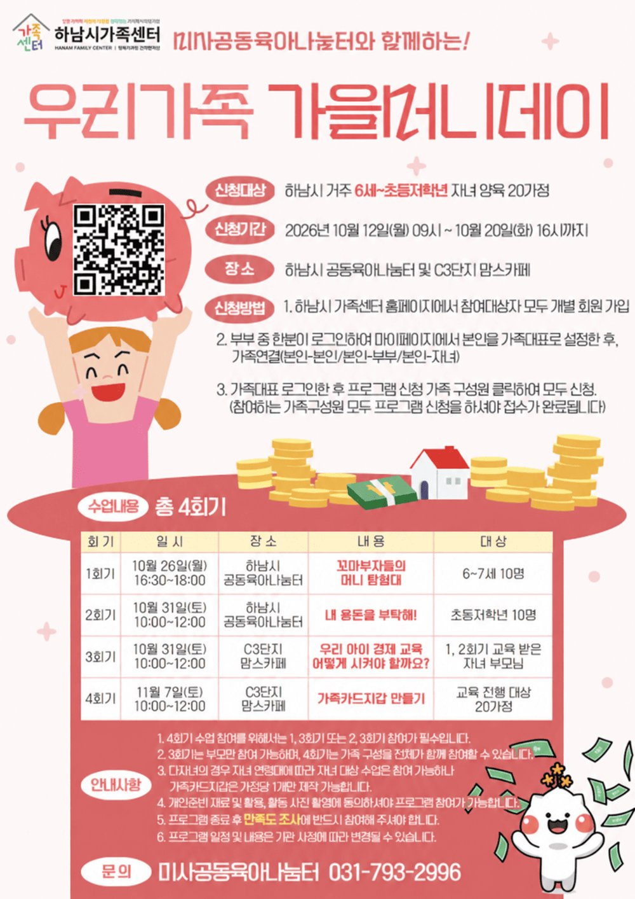
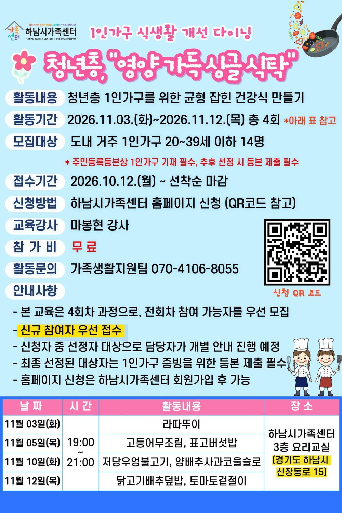

56호 | 2026년 10월 13일 발행
📌 이번 호 주요 목차
 우리동네 국회의원 이광재
우리동네 국회의원 이광재
📝 현장일지
이광재의원, 10월 둘째 주 주간이광재 "이번 국정감사, 식당·서당·경로당을 마음에 두고 치르고 있습니다"
• 10월 둘째 주 하남 시민께 보내는 주간 편지
• 민주당 말고도 '식당·서당·경로당' 세 당을 마음에 두고 국정감사 진행
• 잠든 카드 포인트·항공 마일리지를 지역화폐로 바꿔 동네 가게에서 쓰도록 제안, 부총리 "관계부처와 검토" 답변
• 30년 넘은 학교 건물 개선, 영아반 교사 1인당 아동 수 축소, 건강보험 데이터 활용 '전 국민 AI 주치의' 제안
• "정쟁이 아니라 삶이 나아지는 소식을 전하겠습니다"
• 민주당 말고도 '식당·서당·경로당' 세 당을 마음에 두고 국정감사 진행
• 잠든 카드 포인트·항공 마일리지를 지역화폐로 바꿔 동네 가게에서 쓰도록 제안, 부총리 "관계부처와 검토" 답변
• 30년 넘은 학교 건물 개선, 영아반 교사 1인당 아동 수 축소, 건강보험 데이터 활용 '전 국민 AI 주치의' 제안
• "정쟁이 아니라 삶이 나아지는 소식을 전하겠습니다"
📌 출처: 이광재 공식 네이버 블로그
📝 현장일지
이광재의원, 한국은행 국정감사서 "AI 잘 아는 분, 몇 명이나 계십니까?"
• 10월 12일 재정경제기획위원회 한국은행 국정감사
• 직원 2,500명 중 AI 전문가는 소수… 미·영 중앙은행처럼 경제·AI 전문가 한 팀 구성 촉구
• 금리 1%p 오르면 3억 대출자 연 300만 원 부담, 청년·자영업자별 무게까지 정밀 분석 주문
• 계산 모형 외부 공개, 보고서가 실제 정책으로 이어지도록 정부와 공동 연구 제안
• 신현송 총재, 전문가 추가 채용에 동의
• 직원 2,500명 중 AI 전문가는 소수… 미·영 중앙은행처럼 경제·AI 전문가 한 팀 구성 촉구
• 금리 1%p 오르면 3억 대출자 연 300만 원 부담, 청년·자영업자별 무게까지 정밀 분석 주문
• 계산 모형 외부 공개, 보고서가 실제 정책으로 이어지도록 정부와 공동 연구 제안
• 신현송 총재, 전문가 추가 채용에 동의
📌 출처: 이광재 공식 네이버 블로그
📰 언론보도
[연합뉴스] 이광재의원 "국내 기업에 강하고 외국계에 약한 구조로는 조세 정의 못 세워"
이광재 의원이 국세청 자료를 분석한 결과, 2022년부터 올해 6월까지 종결된 100억 원 이상 초고액 세금 소송 214건 중 82건(38.3%)에서 국세청이 패소했습니다. 올해 상반기 패소액의 59.4%는 외국계 기업 상대 소송에서 나왔고, 패소로 이자까지 얹어 돌려준 환급금은 4년간 2조 3천억 원에 달했습니다. 이 의원은 "국내 기업에 강하고 외국계에 약한 구조로는 조세 정의를 세울 수 없다"며 국제조세 대응 역량 강화와 AI를 활용한 과세 시스템 구축을 촉구했습니다.
📌 출처: 연합뉴스 (정연솔 기자)
📰 언론보도
[에너지경제] 이광재의원 "국회의원·기초단체장 '정치 성적표' 시대 열어야"
이광재 국회 예결위원장이 국가데이터처 자료를 분석한 결과, 시·군·구 지역내총생산(GRDP) 통계가 공표되기까지 평균 30개월이 걸려 예전보다 6개월가량 늦어졌습니다. 광역 GRDP는 전담 인력 19명이 맡지만 시·도별 기초 GRDP 담당은 1명뿐이고, 담당자 결원으로 통계 작성이 최대 10개월 멈춘 사례도 있었습니다. 이 의원은 "매년 지역 발전의 성과를 숫자로 증명하는 '정치 성적표' 시대를 열자"며 국가 차원의 관리를 제안했습니다.
📌 출처: 에너지경제 (이상무 기자)
📰 하남 지역 주요 뉴스
📚 문화/복지
감일도서관 개관 1주년… 오늘(13일)부터 18일까지 감일문화공원서 '가을, 함께하는 책나들이'
하남시가 지난해 10월 1일 문을 연 감일도서관의 개관 1주년을 맞아 10월 한 달간 공연·전시·체험 등 5개 분야의 기념 프로그램을 운영합니다. 13일부터 18일까지는 감일문화공원에서 '가을, 함께하는 책나들이'를 열어 야외 독서·피크닉 공간을 마련하고, 18일(일)에는 풍선 만들기와 공룡을 소재로 한 '공룡매직쇼', 동화 '장군이네 떡집'을 원작으로 한 입체낭독극이 이어집니다. 어린이 철학·논술 수업과 코딩 보드게임, AI 활용 교육도 함께 진행하며 세부 일정은 감일도서관 홈페이지에서 확인할 수 있습니다. 한편 하남시다함께돌봄센터(위례로제비앙)와 감일종합사회복지관은 지난 6일 아동·가족 복지 증진을 위한 업무협약을 맺고 교육·문화·복지 프로그램 연계와 인력·시설 공유에 나서기로 했습니다.
📌 출처: 웹이코노미 (박창식 기자)
💼 경제/일자리
하남시 '일자리 창출 우수기업' 26개사 신청… 올해 400여 명 고용, 1위 최대 5천만 원 지원
하남시가 지난 2일 접수를 마감한 '2026년 일자리 창출 우수기업 선정'에 26개 기업이 신청했으며, 이들 기업이 고용한 인원은 약 400여 명에 이르는 것으로 나타났습니다. 지난해 15개 기업이 신청한 것과 비교하면 크게 늘어난 수치입니다. 시는 10월 중 일자리 창출(65점)·고용안정(35점)을 기준으로 1차 서류심사를 해 상위 30% 내외를 추리고, 11월 일자리위원회에서 기업운영 성과·고용창출 지속가능성·고용복지를 따지는 2차 블라인드 정성평가를 거쳐 최종 우수기업을 선정합니다. 사업비 1억 원 가운데 1위 기업에 최대 5천만 원, 2위 3천만 원, 3위 2천만 원을 지원하며, 12월에 현판과 지원금을 전달할 예정입니다. 올해로 4회째인 이 사업은 고용안정에 기여한 기업을 발굴해 지역경제를 살리기 위한 기업지원정책입니다.
📌 출처: 시티뉴스 (고승선 기자)
🚨 안전/금융
하남농협, 또 보이스피싱 막았다… "'경기도청 화재예방과' 사칭 송금 요구 주의"
하남농협 중앙지점 김형준 계장이 세심한 관찰로 60대 고객의 보이스피싱 피해를 막아 하남경찰서장 감사장을 받았습니다. 지난 9월 22일 소방공사 대금을 현금으로 송금해야 한다며 창구를 찾은 고객이 계좌번호를 바로 알려주지 못하자, 김 계장은 관련 공문과 문자를 확인했습니다. 공문에는 '경기도청 화재예방과' 명칭과 개인 이름이 적혀 있었지만 사무실 번호 없이 개인 휴대전화 번호만 있었고, 경기도청에 직접 확인한 결과 사실이 아닌 것으로 드러나 즉시 송금을 중단하고 경찰에 신고했습니다. 하남농협은 올해만 2월과 3월에 이어 세 번째로 보이스피싱을 막아냈습니다. 관공서를 사칭해 송금이나 결제를 요구하는 연락을 받으면 해당 기관 대표번호로 꼭 다시 확인하는 것이 좋습니다.
📌 출처: 하남 Times (박필기 기자)
💬 하남 맘카페 HOT 이슈
이번 주 하남 지역 맘카페(미사맘스클럽, 아이품애, 하강맘, 위례에서 공부하기 등)에서 많이 오르내린 HOT 이슈 TOP 3입니다.
1️⃣ [주거] "하남시민 우선공급 50%로 올려야"… 교산신도시 5차 지구계획 변경·4공구 입찰 소식에 관심 집중
현황: 교산맘 카페에는 하남교산 공공주택지구의 하남시민 우선공급 비율을 지금의 30%에서 50%로 높여야 한다는 촉구 소식이 잇따라 공유됐습니다. 오랫동안 하남에 살아온 주민에게 실질적인 기회가 돌아가야 한다는 의견입니다. 교산신도시 부동산 카페에는 국토교통부가 10월 8일 고시한 지구계획 변경(5차) 승인 내용을 정리한 글이 올라왔는데, 공공복합3·주상복합13 블록의 위치가 서로 바뀐 것 외에는 4차 변경안과 큰 차이가 없다는 분석입니다. 조성공사 4공구는 10월 14일까지 공사 참여 업체 접수(PQ)를 마감하고 11월 19일 개찰 예정이라는 소식도 나왔습니다.
💡 주민 포인트: 4공구 PQ 마감은 공사 착공이 아니라 참여 업체의 자격을 먼저 심사하는 단계입니다. 변경된 블록 배치 등 원문은 토지이음 '고시정보'에서 '하남교산'으로 검색하면 확인할 수 있습니다.
💬 주민 반응: "내 고향 신도시인데 분양받기가 하늘의 별 따기"라며 우선공급 확대에 공감하는 댓글과 함께, 공사 일정이 차질 없이 진행되길 바란다는 반응이 많았습니다.
📌 출처: 네이버 카페 (하남교산맘, 교산신도시 부동산정보, 교산라이프)
2️⃣ [교육] "감일·단가람 유치원, 어디가 좋을까요?"… 유치원 입학설명회 시즌, 정보 공유 활발
현황: 2027학년도 유치원 입학 시즌을 앞두고 감일맘 카페에는 감일동 유치원 입학설명회 일정을 정리해 공유하는 글이 올라왔습니다. 정다운 감일맘 카페에는 집 앞 감일유치원과 규모에 비해 원아 수가 적어 활동이 많다는 단가람유치원, 사립 유치원까지 장단점을 묻는 글이 이어졌습니다. 미사맘스클럽에는 입학설명회에 아이를 데려가도 되는지, 활동적인 아이를 위해 바깥 활동이 많은 유치원을 추천해 달라는 글이 올라왔고, 위례 카페에는 놀이시설과 장난감 대여가 가능한 위례동 공동육아나눔터 이용 팁도 공유됐습니다.
💡 주민 포인트: 공립유치원 입학 신청은 '처음학교로' 누리집에서 진행됩니다. 관심 있는 유치원의 설명회 날짜와 사전 신청 여부, 아이 동반 가능 여부를 미리 전화로 확인해 두세요.
💬 주민 반응: "설명회 다니는 것도 일이네요"라는 공감과 함께, 실제 보내 본 부모들이 바깥 활동·급식·통학 등 경험담을 나누는 댓글이 많았습니다.
📌 출처: 네이버 카페 (클럽감일맘, 정다운 감일맘, 미사강변도시 미사맘스클럽, 위례 맘속에)
3️⃣ [생활] "도서관 앱 먹통, 저만 그런가요?"… 버스 환승 대기·공원 주차비까지 생활 불편 문의 잇따라
현황: 미사맘스클럽에는 하남시립도서관 앱 메뉴에 들어가면 오류 페이지가 뜨고, 홈페이지도 보안 문제로 연결되지 않는다는 글이 이틀 연속 올라왔습니다. 교산 지역 카페에는 하남시청역에서 내려 버스를 20분 넘게 기다리다 결국 택시를 탔다며 덜 기다리는 시간대를 묻는 글이, 미사 카페에는 하남시민 차량으로 등록했는데 경정공원에서 4시간 주차 후 9,200원이 나왔다며 시민 할인이 적용된 것인지 묻는 글이 올라왔습니다.
💡 주민 포인트: 도서관 앱·홈페이지 오류가 계속되면 하남시립도서관(감일·미사 등 각 관)에 전화로 대출·예약을 문의할 수 있습니다. 공원 주차 할인은 출차 영수증의 할인 적용 내역을 확인하고, 적용이 안 됐다면 관리사무소에 문의해 보세요.
💬 주민 반응: "저도 안 돼서 폰 문제인 줄 알았어요"라는 댓글과 함께, 날이 추워지는데 버스 정류장 대기가 힘들다며 배차 간격 개선을 바라는 목소리가 많았습니다.
📌 출처: 네이버 카페 (미사강변도시 미사맘스클럽, 교산우리동네)
🎭 ALL IN 하남라이프
2026년 10월 13일 기준 한눈에 보는 하남시 최신 문화·행사·교육 안내 가이드
🍳 ~10.25(일) 접수 | 감일권역 성인 32명 · 추첨
2026년 감일건강생활지원센터 '건강 한끼 요리 교실' 참여자 모집
"건강하게 한 끼, 이웃과 함께 요리해요"
감일건강생활지원센터가 감일·감북·위례 주민을 위한 '건강 한끼 요리 교실' 참여자를 모집합니다. 회차당 8명씩 소규모로 운영합니다.
📝 모집 기간: 10월 12일(월) 09:00 ~ 10월 25일(일) 23:30 (마감 후 일괄 추첨)
👥 대상: 감일권역(감일·감북·위례) 성인 32명 (회당 8명)
🗓 일정: 10월 28일(수) 10:00~11:30, 14:00~15:30 / 29일(목)·30일(금) 14:00~15:30
📍 장소: 감일건강생활지원센터 (감일순환로 181, 감일공공복합청사 2층)
💻 신청: QR코드 또는 온라인 신청서
📢 선정 발표: 10월 26일(월), 선정자에 한해 개별 문자 안내
감일건강생활지원센터가 감일·감북·위례 주민을 위한 '건강 한끼 요리 교실' 참여자를 모집합니다. 회차당 8명씩 소규모로 운영합니다.
📝 모집 기간: 10월 12일(월) 09:00 ~ 10월 25일(일) 23:30 (마감 후 일괄 추첨)
👥 대상: 감일권역(감일·감북·위례) 성인 32명 (회당 8명)
🗓 일정: 10월 28일(수) 10:00~11:30, 14:00~15:30 / 29일(목)·30일(금) 14:00~15:30
📍 장소: 감일건강생활지원센터 (감일순환로 181, 감일공공복합청사 2층)
💻 신청: QR코드 또는 온라인 신청서
📢 선정 발표: 10월 26일(월), 선정자에 한해 개별 문자 안내
📌 출처: 감일건강생활지원센터
💰 10.12~10.20 접수 | 6~10세 자녀 가정
(미사) 우리가족 가을머니데이 — 놀이로 배우는 우리 아이 경제교육 (하남시가족센터)
"용돈 관리부터 가죽 카드지갑 만들기까지, 온 가족 경제 수업"
하남시가족센터 미사공동육아나눔터가 놀이 체험으로 돈의 개념과 용돈 관리를 배우는 가족 경제교육을 4회기로 운영합니다.
📝 접수: 10월 12일(월) 09:00 ~ 10월 20일(화) 16:00
👥 대상: 하남시 거주 6세~초등 저학년 자녀와 부모 (정원 40명)
🗓 일정: ① 10.26(월) 꼬마부자들의 머니 탐험대(6~7세) ② 10.31(토) 내 용돈을 부탁해(초등 저학년) ③ 10.31(토) 우리 아이 경제교육 어떻게?(부모) ④ 11.7(토) 가죽 카드지갑 만들기(부모+자녀)
📍 장소: 미사공동육아나눔터 (미사강변한강로 290, 미사강변도시 C3단지)
💻 신청: 하남시가족센터 홈페이지 (가족 구성원 모두 회원가입 필요)
☎️ 문의: 031-793-2996
하남시가족센터 미사공동육아나눔터가 놀이 체험으로 돈의 개념과 용돈 관리를 배우는 가족 경제교육을 4회기로 운영합니다.
📝 접수: 10월 12일(월) 09:00 ~ 10월 20일(화) 16:00
👥 대상: 하남시 거주 6세~초등 저학년 자녀와 부모 (정원 40명)
🗓 일정: ① 10.26(월) 꼬마부자들의 머니 탐험대(6~7세) ② 10.31(토) 내 용돈을 부탁해(초등 저학년) ③ 10.31(토) 우리 아이 경제교육 어떻게?(부모) ④ 11.7(토) 가죽 카드지갑 만들기(부모+자녀)
📍 장소: 미사공동육아나눔터 (미사강변한강로 290, 미사강변도시 C3단지)
💻 신청: 하남시가족센터 홈페이지 (가족 구성원 모두 회원가입 필요)
☎️ 문의: 031-793-2996

📌 출처: 하남시가족센터 (미사공동육아나눔터)
🙌 ~11.10 접수 | 모두가족봉사단 가족
모두가족봉사단 '자원봉사자의 날(Honours Day)' 참가 신청 (하남시가족센터)
"한 해 동안 함께해 준 가족 봉사자들을 위한 날"
하남시가족센터 모두가족봉사단 소속 봉사자와 가족을 초대하는 자원봉사자의 날 행사가 스타필드 하남에서 열립니다.
🗓 일시: 2026년 11월 14일(토) 09:30 ~ 12:00
📝 접수: 10월 1일 ~ 11월 10일(화) 18:00
👥 대상: 모두가족봉사단 소속 봉사자 및 그 가족 (정원 140명)
📍 장소: 스타필드 하남 메가박스 (미사대로 750)
💻 신청: 하남시가족센터 홈페이지 프로그램신청 (로그인 후 신청)
하남시가족센터 모두가족봉사단 소속 봉사자와 가족을 초대하는 자원봉사자의 날 행사가 스타필드 하남에서 열립니다.
🗓 일시: 2026년 11월 14일(토) 09:30 ~ 12:00
📝 접수: 10월 1일 ~ 11월 10일(화) 18:00
👥 대상: 모두가족봉사단 소속 봉사자 및 그 가족 (정원 140명)
📍 장소: 스타필드 하남 메가박스 (미사대로 750)
💻 신청: 하남시가족센터 홈페이지 프로그램신청 (로그인 후 신청)
📌 출처: 하남시가족센터 (모두가족봉사단)
🏛️ 공공기관 소식지
2026년 10월 13일 기준 하남시 공공기관 주요 공고·신청 안내입니다.
🍽️ 하남시가족센터 | 1인가구 청년 14명 · 무료
1인가구 식생활개선 다이닝 청년층 '영양가득 싱글식탁' 참여자 모집
"혼자 먹어도 제대로, 균형 잡힌 한 끼 만들기"
하남시가족센터가 1인가구 지원사업으로 청년 1인가구를 위한 건강식 요리 수업을 4회 과정으로 운영합니다.
👥 대상: 도내 거주 1인가구 20~39세 청년 14명
📝 접수: 10월 12일(월) ~ 11월 2일(월) 18:00, 선착순 (신규 참여자 우선)
🗓 일정: 11월 3일(화)·5일(목)·10일(화)·12일(목) 19:00~21:00
🍳 메뉴: 라따뚜이, 고등어무조림·표고버섯밥, 저당우엉불고기·양배추사과코울슬로, 닭고기배추덮밥·토마토겉절이
📍 장소: 하남시가족어울림센터 3층 요리교실 (신장동로 15)
💰 참가비: 무료 (선정 시 1인가구 증빙 위해 등본 제출)
☎️ 문의: 가족생활지원팀 070-4106-8055
하남시가족센터가 1인가구 지원사업으로 청년 1인가구를 위한 건강식 요리 수업을 4회 과정으로 운영합니다.
👥 대상: 도내 거주 1인가구 20~39세 청년 14명
📝 접수: 10월 12일(월) ~ 11월 2일(월) 18:00, 선착순 (신규 참여자 우선)
🗓 일정: 11월 3일(화)·5일(목)·10일(화)·12일(목) 19:00~21:00
🍳 메뉴: 라따뚜이, 고등어무조림·표고버섯밥, 저당우엉불고기·양배추사과코울슬로, 닭고기배추덮밥·토마토겉절이
📍 장소: 하남시가족어울림센터 3층 요리교실 (신장동로 15)
💰 참가비: 무료 (선정 시 1인가구 증빙 위해 등본 제출)
☎️ 문의: 가족생활지원팀 070-4106-8055

📌 출처: 하남시가족센터 (가족생활지원팀)
💳 하남시 | 10월 할인 혜택 종료
10월 지역사랑상품권(하머니) 할인 예산 소진 안내 (종료)
"10월 하머니 할인은 끝났어요 — 11월 할인은 별도 공지 예정"
10월 지역사랑상품권(하머니) 인센티브 예산이 모두 소진되어 할인 혜택이 종료되었습니다.
📅 소진일: 2026년 10월 6일(화)
⚠️ 유의: 예산 소진 이후 충전한 금액에는 할인 혜택이 적용되지 않습니다
📢 11월 할인: 향후 별도 공지 예정
10월 지역사랑상품권(하머니) 인센티브 예산이 모두 소진되어 할인 혜택이 종료되었습니다.
📅 소진일: 2026년 10월 6일(화)
⚠️ 유의: 예산 소진 이후 충전한 금액에는 할인 혜택이 적용되지 않습니다
📢 11월 할인: 향후 별도 공지 예정
📌 출처: 하남시청
© 2026 우리동네 진짜일꾼 이광재